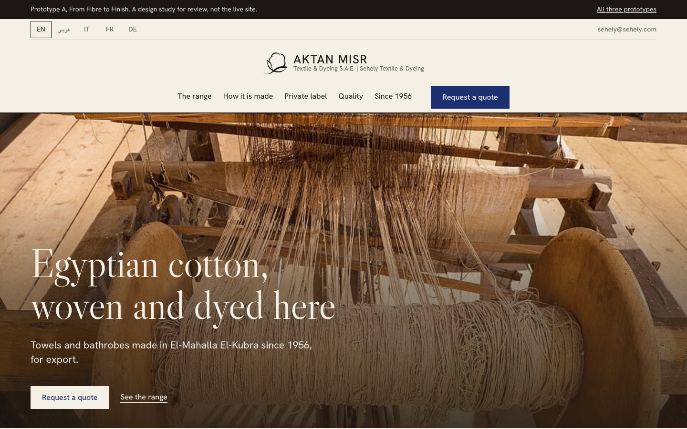
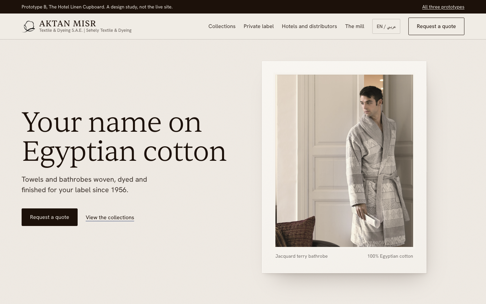
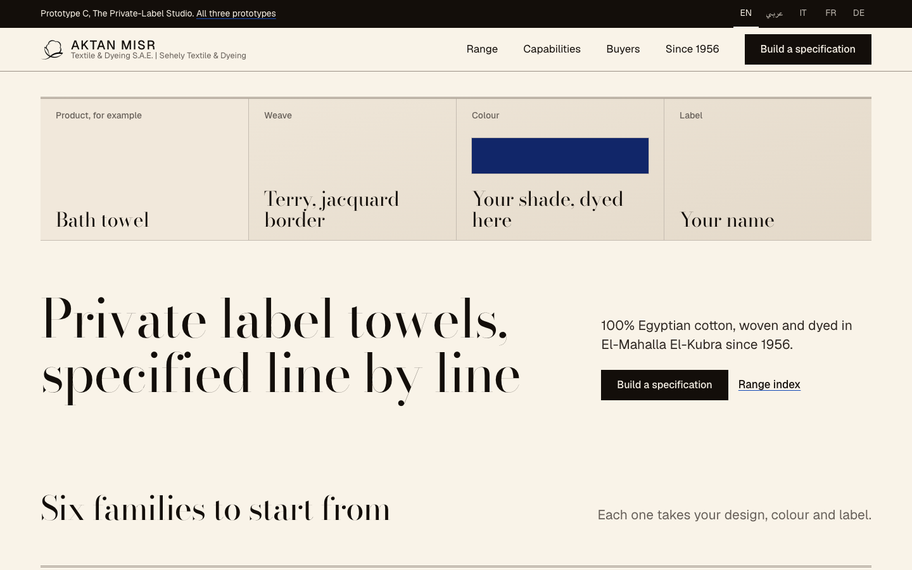

A. From Fibre to Finish
Heritage mill, precise. The process is the story.
Design explorations for review, not the live site. Each prototype has the same three pages (home, range and quote request), the same content and the same Arabic right-to-left demo. Dashed boxes mark facts still to supply.

Heritage mill, precise. The process is the story.

Premium and quiet. The product as an object.

A tool for buyers. The specification is the hero.
| Criterion | A. Fibre to Finish | B. Linen Cupboard | C. Private-Label Studio |
|---|---|---|---|
| Brand fit | Strongest. Since 1956, Dyeing and vertical control are the spine. | Good. Premium lift, but heritage is a side note. | Good. Modern and exact. Heritage appears as a single statement. |
| Buyer clarity | Clear process, range, spec rows and paths. | Product-led. Specs sit in cards one click deep. | Clearest for private label. The builder qualifies leads. |
| Credibility | High once real factory photos replace the stand-ins. | Depends most on a professional product shoot. | Relies on type and specs, so it needs few photos but real MOQs and weights. |
| Signature | Pinned process: yarn, weaving, dyeing, finishing, packing. | Collection as dyed cotton sample strips. | Specification sheet that fills in as you choose. |
| Responsive | Pinned photo becomes inline photos per stage. | Strips become a horizontal rail. | Builder summary moves above the steps. |
| Build effort | Medium | Medium (photography is the cost) | Higher (builder logic, quote pipeline) |